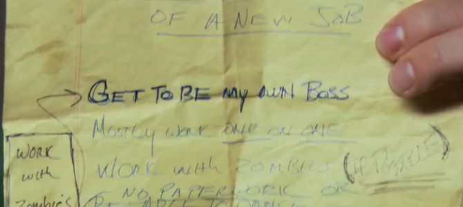
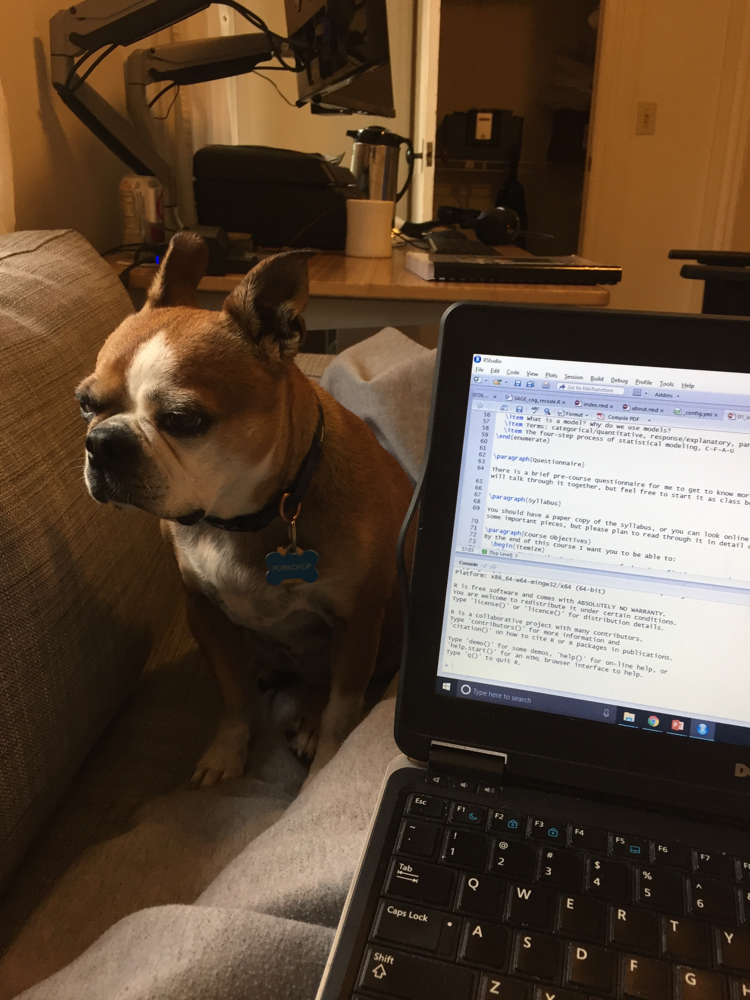

I realized I didn’t really want to do what I was doing in Part 1. But that didn’t yet mean I knew what I did want. Or how to get it, coming up in Part 3.
Initially, I really reveled in the power of the clarity I had just stumbled on: I knew what I didn’t want. The moments in my life of naming truths, a diagnosis of a nascent issue that I didn’t know (or couldn’t see) as not working for me, had often been profound. This was no different. I had gotten jobs before - from busboy to faculty member - and had some self-confidence that I could do that again. Fortunately, I was in a position where I didn’t need to rush any process to figure out what was next or make any decision.
Still: how do I do this?? How do I figure out what I want? Should I read What Color Is My Parachute? Who was even in my network outside of academia? Was I too academic, so much that I was unemployable outside? And if I knew what I wanted, was I actually going to be able to get it? I probably need another Masters degree before I could get a job! Or like 1 year of taking Coursera courses and building up a professional portfolio. While all of that abstract, fear-based nonsense certainly was rattling around in my head, I was fortunate that it was at a relatively low volume and was mostly fleeting.
I thought a lot about what I liked doing, not dissimilarly from April Ludgate in Parks and Rec who has a long arc in the final season to find what she wanted to do next after realizing she had landed in a job she didn’t really enjoy and wasn’t excited by a long future career of more, similar roles. She made a list of what she wanted to do when she was a kid, of different qualities she wanted in her job (e.g., work mostly one-on-one, use creative problem solving, and also work with zombies…).  She goes to a few different places to try them out, asks her friends and mentors for help (including working through her fear of disappointing people who had invested in her career whose advice she respected), and ultimately found what she wanted.  Though I think I’ve seen that show enough times that references to it have become second nature, I didn’t actually set out to sort out my life based on this fictional weirdo. Instead, I’m including only because I think this process actually offers some useful structured steps to anyone looking for a new role and direction. (and I’m not the only one…)
Though I think I’ve seen that show enough times that references to it have become second nature, I didn’t actually set out to sort out my life based on this fictional weirdo. Instead, I’m including only because I think this process actually offers some useful structured steps to anyone looking for a new role and direction. (and I’m not the only one…)
There were qualities that I liked doing in roles that I’d had – working with data, being driven by an external and actionable research question, creative problem solving, and informing data-driven decision-making. I really took that initial root from why I wanted to get a doctorate of wanting to do program and policy evaluation to heart. I focused on getting as close to that kind of work as I could, even though I didn’t want to limit myself only to those specific roles. Still, it was a pretty good guiding star, and made it feel like I was making this next move to go back full circle to what I had long wanted. I knew I wanted to stay working in health to some extent, but conceptualized that much more broadly than I had before (e.g., insurers, pharmaceuticals, medical device makers, providers, startups) and much more in health care than in public health per se. Could I do consulting? Full time program evaluation or research at a government contractor? What options were there at insurance or pharmaceutical companies?
During the last part of my professional chapter in academia, I spent time teaching in a program on statistical & data sciences. To teach it, I needed to know a lot more about it. I learned R the summer in between one job and another (while also moving half-way across the country).  It was harrowing teaching material that I felt barely a step ahead of in my own understanding, but I did it, got much better quickly, slowly moved all of my quantitative analysis work into R, and after two years of using R, I builtmy first package – a data package to facilitate people using new, national data on family caregiving, which had been a major area of my research. Given that experience, which included seeing the kinds of success and jobs that former students were getting – at salaries that were similar to mine as a professor – I had a sense of what skills I had and what was expected from a data scientist role. I was comfortably and solidly in the traditional research section of this classic Venn diagram, but the short distance to being a data scientist still felt vast and the route quite unclear. 
Which queued the imposter syndrome cacophony: I didn’t have a degree in statistics or any formal background in computer science. I had never been trained formally in SQL or worked much with databases. Although I was a pretty adept applied statistician and had lots of expertise with regression models, my math background left lots to be desired. While I was familiar with many of them by name, I hadn’t used lots of the other methods under the machine learning umbrella. I had previously been rejected from a well known data science bootcamp program – how was I going to get a job if I couldn’t even get into a bootcamp? I knew more about choral ensembles than ensemble models (I went to a performing arts high school where I was a voice major… chorus conflicted with AP Calculus, so I never took calculus. See what I meant about my math background?). I had never worked with health care claims data. AND I DIDN’T KNOW PYTHON!
Fortunately, I also had skills and people in my life to help me turn down the volume on that noise and remind me of my (many) strengths. That maybe I didn’t need that second master’s degree before I could get this job. That I could reframe a lot of my experience teaching and on research teams as being a methodological project lead and mentoring junior data scientists. That my conference presentations and publications, not to mention teaching, illustrated skills in communicating complex content quickly and succinctly. That having won grants meant I could successfully craft compelling research questions and proposed solutions that others saw as valuable. That I didn’t need to spend 6 months perfecting CSS or retrofitting multiple projects into a perfect website portfolio of my work. That I already had people in my network that I could reach out to for advice, help, and job leads.
I got a lot of help and advice of how practically to get there. I found jobs that weren’t quite data science but very similar and really interesting. I took as many meetings and had as many conversations as I could. It was a great time to explore.
I learned a lot about the wider health space, and found it really liberating. I hadn’t realized how much I’d had blinders on before in academia – I was limited geographically to places that had colleges and universities. I was actually lucky to a certain extent to be looking during COVID-19, where everyone was working remotely. Many more places were open to permanent remote positions than I suspect would have been a year before. I didn’t want to move, and was liberated by not being bound geographically of what would be doable in a daily commute. But the blinders were also about the range of companies and organizations that were out there. Faculty positions at colleges and universities were a very clear role and path, and the places I could imagine working were ones I had long known about and could name quickly. It turns out there is a big, wide world beyond that narrow academic path.
I also learned a lot about the process of finding a job and navigating this big, wide world. I knew how to apply for an interview for academic jobs, how to format a CV, how to give a research and teaching talk, what the cycle and pace of that process would be. But everything else felt foreign. Oh, LinkedIn is actually a thing? What goes into a resume, and what makes a good one?
I’ll talk through some of the specific things that I learned, resources I used, and advice I’d offer others trying to make a similar move in the next blog post. Some will be specific to data science, and other pieces more relevant for people with PhDs, and hopefully useful to someone in either situation.